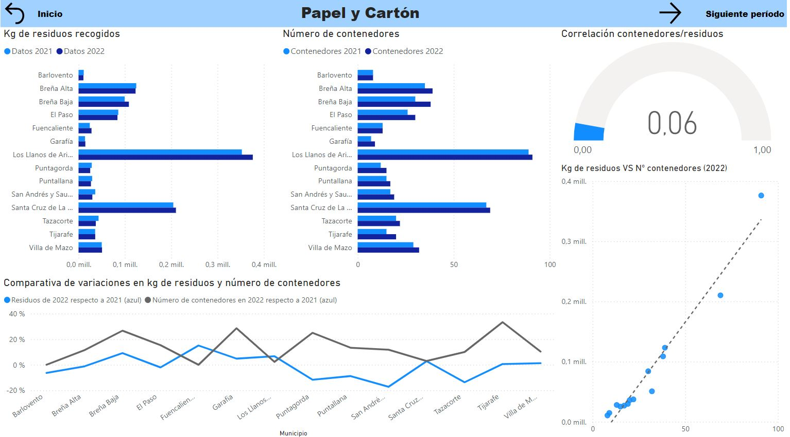
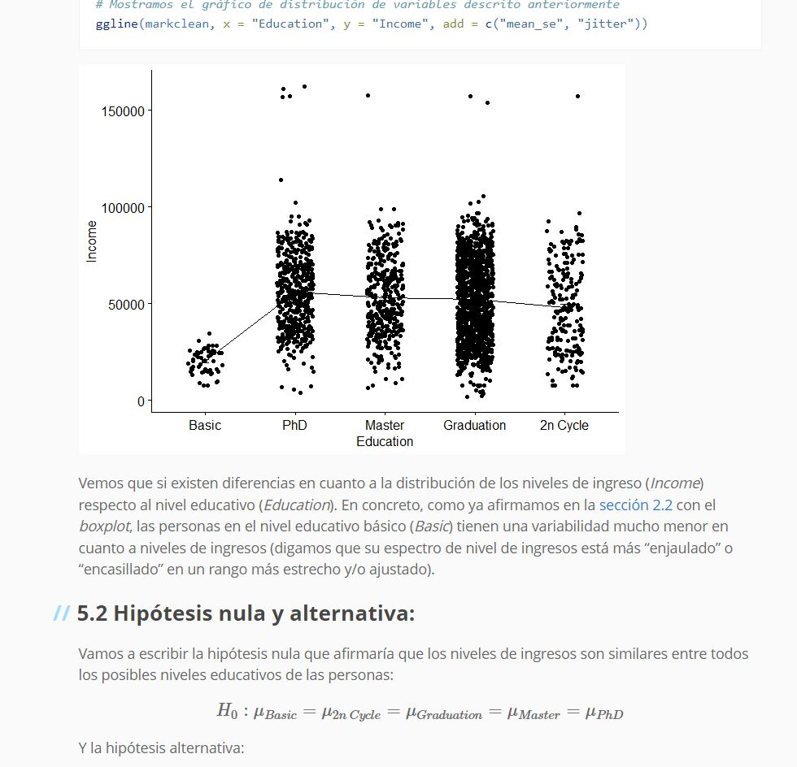
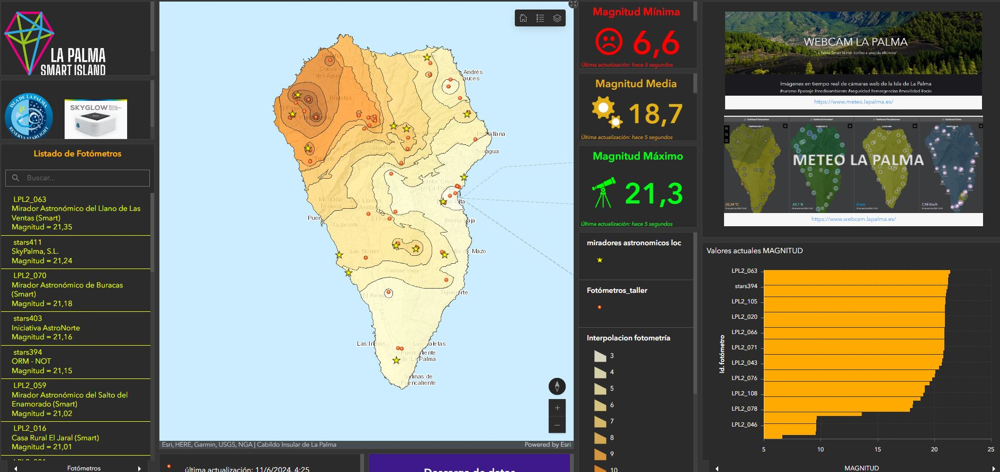
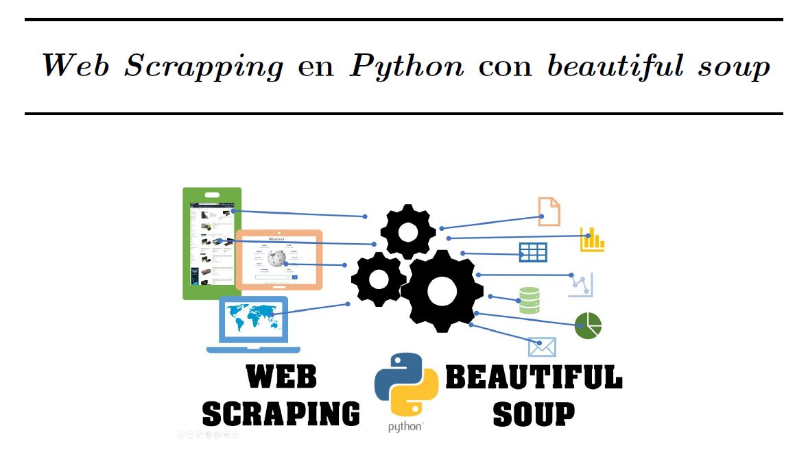
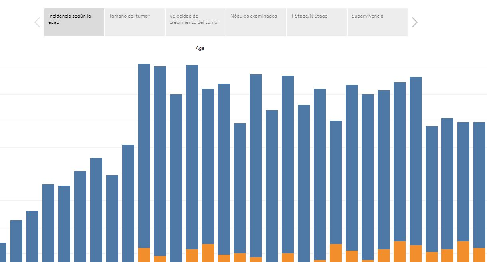

Back
All categories
R
Python
ArcGIS
PowerBI
Tableau
R
Modelos predictivos para la diabetes.
Tras razonar la relación entre distintas variables, procedemos a la aplicación y evaluación de distintos modelos supervisados y no supervisados para predecir si los pacientes de un conjunto de datos tienen diabetes o no.

PowerBI
Dashboard estadístico de gestión de residuos.
Este dashboard desarrollado en PowerBI permite analizar los datos de gestión de residuos, ofreciendo visualizaciones interactivas que facilitan la toma de decisiones en la administración de residuos.

R
Marketing: Estudio estadístico.
Análisis de datos y aplicación de técnicas estadísticas avanzadas para optimizar estrategias de marketing en la plataforma (ficticia) iFood utilizando R. Los datos con los que trabajos corresponden a un conjunto de ciudadanos y en él se nos indican el año de nacimiento, nivel educativo y su respuesta frente a campañas de marketing previas así como sus hábitos de compra según la tipología de productos y cantidad de los mismos que compra.
ArcGIS
Dashboard en tiempo real de conteo de personas y vehículos.
Este dashboard en ArcGIS Online ofrece un seguimiento en tiempo real de los movimientos de personas y vehículos en distintas áreas, ideal para gestión urbana y eventos. Los datos son recogidos por unas cámaras desplegadas en la isla bajo el proyecto La Palma Smart Island y los obtenemos a través de una API bajo un notebook automatizado de Python en la plataforma de ArcGIS online que luego son volcados en una capa que se actualiza periodicamente y desde la cual generamos el dashboard.
PowerBI
Dashboard de niveles de CO2 en La Palma (2021).
Monitoreo de los niveles de CO2 en las zonas afectadas por la erupción volcánica de La Palma en 2021, utilizando visualizaciones interactivas en PowerBI. Este dashboard ayuda en la toma de decisiones sobre que secciones de la población afectada se puede habilitar la vuelta de sus residentes o no según los niveles de CO2 en ppm (partes por millón) registrada por una serie de balizas desplegadas bajo el proyecto La Palma Smart Island.
Python
Modelos de clustering de datos.
Implementación y evaluación de modelos de clustering para segmentación de datos, utilizando bibliotecas de Python y datos sintéticos (simulados de manera aleatoría por nosotros mismos).
Python
Combinación y evaluación de modelos de regresión.
Estudio comparativo y combinación de diferentes técnicas de regresión para mejorar la precisión de los modelos predictivos en Python. En este caso partimos de un dataset de pacientes que han sufrido un infarto de miocardio y comparamos la precisión obtenida tras aplicar diferentes métodos (y combinación de ellos) clasificadores.
Python
EDA y preprocesado de un conjunto de datos de incendios forestales.
Exploración de datos y preprocesamiento para el análisis predictivo de incendios forestales, utilizando Python. En este proyecto tras hacer un preprocesado y limpieza de datos, determinamos a través de una matriz de correlaciones aquellas variables más influyentes a la hora de que se produzca un incendio y en función de esos resultados llevamos a cabo una reducción de dimensionalidad del problema para posteriormente analizar la variabilidad del target (área de la superficie quemada en el incendio).
PowerBI
Dashboard de la RPT de 2023 del cabildo de La Palma.
Visualización interactiva de la Relación de Puestos de Trabajo (RPT) del Cabildo de La Palma para la plantilla del año 2023. En este dashboard podemos relativizar de manera visual la cantidad de personal destinada a diferentes secciones de la administración pública local en función de su nivel de estudios o grupos retributibos.
Tableau
Dashboard seguimiento vacunación COVID-19.
Seguimiento del proceso de vacunación contra el COVID-19, con visualizaciones interactivas en Tableau. Hacemos un seguimiento del porcentaje de la población sin vacunar, con una dosis o ambas dosis de la vacuna en función del país y también realizamos una comparativa entre países, los vacunados y el PIB del mismo.

ArcGIS
Dashboard e interpolación de datos de fotometría en tiempo real.
>Dashboard de fotometría en tiempo real, con interpolación de datos de luminosdad del cielo nocturno medido por una red de fotómetros desplegados en la isla de La Palma bajo el proyecto La Palma Smart Island. Este dashboard así como los notebooks de Python automatizados para actualizar los datos a través de diferentes APIS en la plataforma de ArcGIS Online.

Python
Web Scrapping.
Técnicas de web scraping para extraer datos de sitios web de manera eficiente utilizando Python. En concreto generamos un dataset sobre películas a través de web scrapping al portal web de Filmaffinity (el cual carece de API).
Otro
TFG: Characterization of the parameters of an infrared astronomical detector.
Trabajo de fin de grado realizado bajo la tutorización de Francisco Garzón López, jefe de proyecto EMIR en el GTC del IAC y catedrático de la ULL. En este proyecto analizamos y ajustamos los parámetros intrínsicos del detector para poder tenerlos en cuenta en la corrección de los futuros datos recabados con dicho instrumento. Los análisis se hicieron con numerosos scripts de Python desarrollados para tal fin desde cero y sustentados en la teoría de la astrofísica y el funcionamiento del telescopio y el detector.
Otro
Memoria de prácticas externas.
Memoria detallada de las prácticas externas realizadas en el marco del plan de estudios del grado en física que cursé en la ULL. En esta memoria técnica relato mi paso por el centro de apoyo a la investigación de la ULL (SEGAI), en concreto por los servicios de difracción de rayos X y por el servicio de microscopía electrónica.

Tableau
Dashboard sobre el cáncer de mama.
Visualización interactiva hecha en Tableau sobre la incidencia y tratamiento del cáncer de mama, así como del ratio de supervivencia en función del grado de la enfermedad, su velocidad de crecimiento y como influye la cantidad de nódulos examinados o el tamaño del tumor.